Reinvigorating your Backbone Application
Created by Mike Macaulay / @mmacaula
Who Am I?
- Java for about 8 years
- Moved to Omaha 3 years ago
- Web / Javascript developer ever since
Who I work for
Agenda
- Current state of things
- Left behind?
- Ways to reinvigorate
Let's go way back
2012

Fast forward

The rise of React

The others
The others

Meanwhile
Not much happening with Backbone itself
No real roadmap
Have we been left behind??
If Yes:
Then that stinks
Not all is lost!
That's why you're here!
Backbone is not unique, just the "first"
- The new kids are not immune to this effect
- Angular 2.0 will be a difficult upgrade path
- The next big thing
My Story
- Large Single Page App
- WebGL application
- Backbone was great but...
- Marionette
- Explosion of other frameworks
- Left us feeling lost and left behind
How we managed to reinvigorate
What is Backbone?
 http://williambrownstreet.net/work/backbonejs.slides/codemirror/introduction/images/mvc-backbone.png
http://williambrownstreet.net/work/backbonejs.slides/codemirror/introduction/images/mvc-backbone.png
Marionette
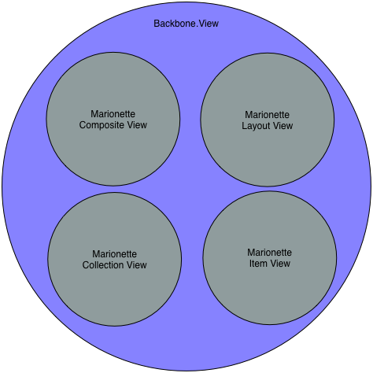Fundamentals
Backbone follows a MVC-like pattern
And follows it fairly well
Amount of code in a typical Backbone Application
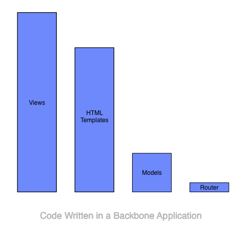With Marionette

These interfaces are very decoupled
http://williambrownstreet.net/work/backbonejs.slides/codemirror/introduction/images/mvc-backbone.png
Decoupled interfaces are replaceable
Let's check out an example
Templating
How we did it
var ich = require('icanhaz');
var templateText = require('text!assets/templates/myTemplate.html');
ich.addTemplate('myTemplate', templateText);
MyView = Backbone.View.extend({
render : function(){
this.$el.html(ich.myTemplate(this.model.toJSON()));
}
});
return MyView;
AMD, Loading and compiling template are details
Or it could be this:
var myTemplateFunction = require('path/to/myTemplateFunc');
MyView = Backbone.View.extend({
render : function(){
this.$el.html(myTemplateFunc(this.model.toJSON()));
}
});
return MyView;
This is actually what we did
myTemplateFunc is actually a handlebars compiled function
This is better
Start using it on all new or 'touched' code
Get to:
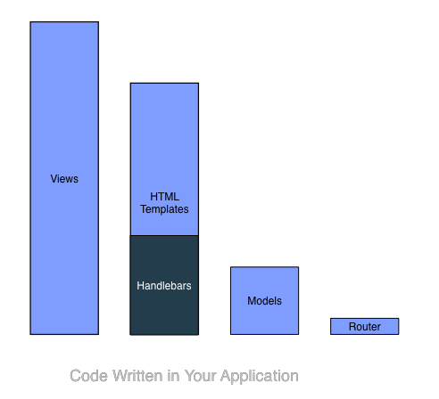Let's keep going
Polymer / WebComponents
Quick Primer
- Custom Elements like "< video >"
- Wholly replace some views in your app
- Where it makes sense
Old View / Template
Backbone.View.extend({
events : { 'click .myButton' : 'onClick'},
onClick : function(event){
this.$el.addClass('selected');
}
});
// Template
{{foo}} - {{bar}}
New View / Template
Backbone.View.extend({
// no events or handler, the custom element handles it for us
})
// Template
Some Caveats for Web Components
Production ready?
Custom Elements vs Full Web Component
How we're using them today
Using just Custom Elements
Best example is Github's custom 'time' element

Back to our chart
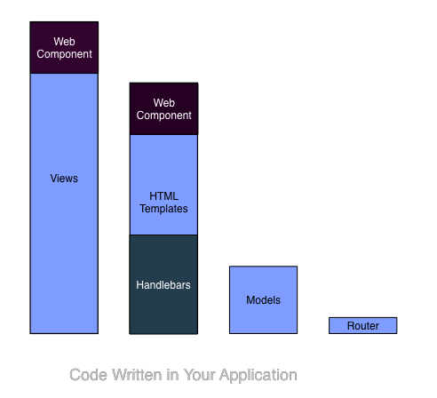Backbone.Model
http://williambrownstreet.net/work/backbonejs.slides/codemirror/introduction/images/mvc-backbone.png
Backbone.Model
Well defined interface:
- `on`, `listenTo` for Events
- `get` and `set` for changing data
My issue with Backbone.Model
`get` and `set` to change my data
this.model.set('foo', myValue);
// this would be much nicer
this.model.foo = myValue;
This is an issue
almost every framework or library out there deals with POJOS
- Angular
- React
- Polymer
- D3
- etc
Typical solution
var modelRepresentation = this.model.toJSON();
// pass modelRepresentation to other libs
But we lose our awesome eventing
Especially if these libraries mutate our data
One solution
Ampersand.js
Ampersand.js
A highly modular, loosely coupled, non-frameworky framework for building advanced JavaScript apps.
Ampersand State / Model
Almost a drop-in replacement for Backbone.Model
this.model.set('foo', myValue); // this still works!
// this is now possible!
this.model.foo = myValue;
// eventing still works!
Ampersand Features
- Derived Properties
- Relational Models
- A view class, subcollections, and much more
What we did
Began re-writing all our models as Ampersand.js Models
Began using Ampersand Views for new views
Did not have to rewrite existing Backbone Views!!
So now we have
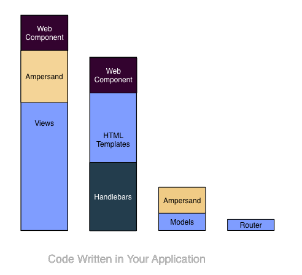Next up
React
What is React?
Tons of tutorials out there
We can think of it as another replacement for Backbone.View
React vs Backbone.View
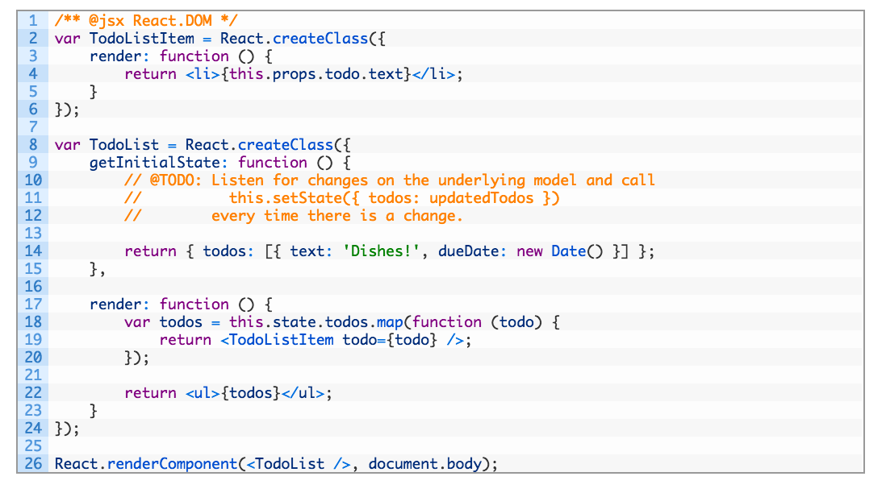React vs Backbone.View
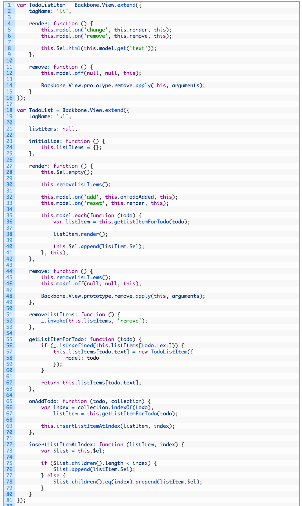Marrying React with Backbone
var MyWidget = React.createClass({
handleClick: function() {
alert('Hello!');
},
render: function() {
return (
Do something!
);
}
});
var MyView = Backbone.View.extend({
el: 'body',
template: '',
render: function() {
this.$el.html(this.template);
React.renderComponent(new MyWidget(), this.$('.widget-container').get(0));
return this;
}
});
new MyView().render();
So now we *could* have
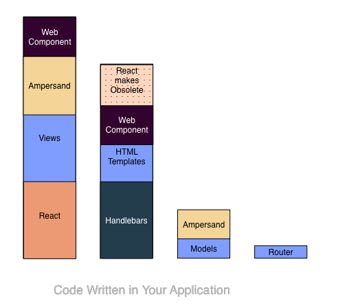But do we really want this?
 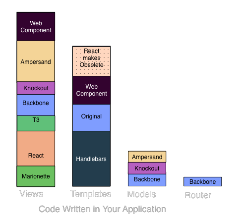
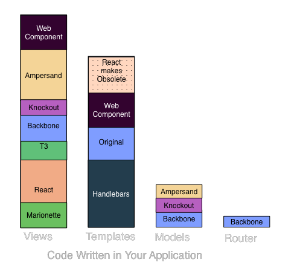
Probably not
As always, it depends
What we don't want
Progressive Maintenance
"Enhancement" was taken
Find an approach that works for you
Our approach
- Survey what is out there
- Test to make sure it works in your system
- Start small, find out the pain points
- Favor refactoring / upgrading when you 'touch' old code
- Your tests can help you a lot
- Rinse and repeat
Our current architecture:
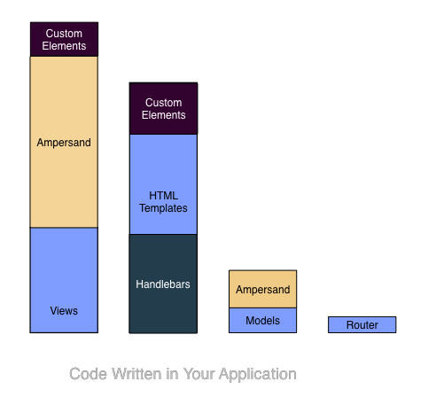Benefits
This approach is valid almost anywhere on any project
- Keeping up to date
- Happy Managers
- Happy Developers
- Fighting Entropy
What you choose should be best for your company / application